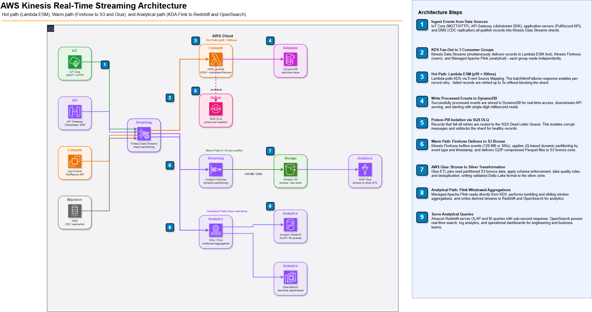

// Real-Time Streaming
AWS Kinesis Real-Time Streaming: Data Streams vs Firehose in Production
Batch processing tells you what happened yesterday. Real-time streaming tells you what is happening right now — and for fraud detection, inventory management, and user personalisation, right now is the only answer that matters. AWS Kinesis is the managed streaming backbone that makes sub-second pipelines possible without running Kafka clusters at 3 AM.
After building Kinesis pipelines for IoT telemetry at scale and clickstream analytics processing millions of events per day, here is everything I wish I had known on day one.
Architecture Overview
// AWS Kinesis Real-Time Streaming Architecture

INTERACTIVE DIAGRAM — zoom & pan
The architecture has three parallel consumer paths from a single KDS stream: a hot path (Lambda for real-time actions), a warm path (Firehose for durable S3 landing), and an analytical path (Managed Flink / KDA for continuous aggregations). One stream, three latency tiers.
Kinesis Data Streams vs Firehose: The Decision Matrix
The most common confusion: engineers use Firehose when they need Streams, or vice versa. They solve different problems.
| Dimension | Kinesis Data Streams | Kinesis Firehose |
|---|---|---|
| Latency | 70ms (standard) / real-time (enhanced fan-out) | 60s–900s buffer window |
| Consumers | Multiple independent consumers, replayable | Single destination per stream |
| Scaling | Manual shards or auto-scaling via UpdateShardCount | Fully automatic, serverless |
| Retention | 24h (default) up to 365 days | No retention — deliver and forget |
| Destinations | Lambda, KDA, custom apps, EC2 | S3, Redshift, OpenSearch, Splunk, HTTP |
| Data transform | Consumer-side (Lambda / Flink) | Inline Lambda transform before delivery |
| Cost model | Per shard-hour + PUT payload | Per GB ingested (no shard concept) |
| Use when | Real-time processing, multiple consumers, replay needed | Landing raw data to S3/Redshift reliably |
Shard Sizing: Getting It Right the First Time
Every Kinesis shard supports 1 MB/s write, 2 MB/s read, 1000 PUT records/s. Under-shard and you get ProvisionedThroughputExceededException; over-shard and you pay for idle capacity.
// Shard Calculation Formula
import math
def required_shards(
max_records_per_sec: int,
avg_record_bytes: int,
consumer_count: int = 1,
) -> dict:
write_shards = math.ceil(
max(
max_records_per_sec / 1000, # record limit
(max_records_per_sec * avg_record_bytes) / (1024 * 1024), # throughput limit
)
)
# Each shard delivers 2 MB/s; scale for multiple consumers
read_shards = math.ceil(
(max_records_per_sec * avg_record_bytes * consumer_count) / (2 * 1024 * 1024)
)
recommended = max(write_shards, read_shards)
return {
"write_shards_needed": write_shards,
"read_shards_needed": read_shards,
"recommended": recommended,
"add_buffer": math.ceil(recommended * 1.25), # 25% headroom
}
# Example: 5000 events/s, 500 bytes avg, 3 consumers
result = required_shards(5000, 500, consumer_count=3)
# → recommended: 4 shards, with buffer: 5 shardsGetRecords is limited to 5 calls/s per shard across all standard consumers. With 3 consumers polling 1 shard, each gets only 1–2 calls/s. Switch to Enhanced Fan-Out (HTTP/2 push, dedicated 2 MB/s per consumer) when you have more than 2 consumers.
Lambda as a KDS Consumer
Lambda is the fastest way to add hot-path processing. KDS triggers Lambda in batch — Lambda reads a batch of records, processes them, and commits the checkpoint. Failures retry the entire batch unless you configure failure handling properly.
// Event Source Mapping — Production Config
resource "aws_lambda_event_source_mapping" "kinesis_trigger" {
event_source_arn = aws_kinesis_stream.events.arn
function_name = aws_lambda_function.stream_processor.arn
starting_position = "LATEST"
# Tune these for your latency vs cost trade-off
batch_size = 100
maximum_batching_window_in_seconds = 5 # Wait up to 5s to fill a batch
# Failure handling — critical in production
bisect_batch_on_function_error = true # Split bad batches in half to isolate poison pills
maximum_retry_attempts = 3
maximum_record_age_in_seconds = 3600 # Drop records older than 1h (avoid infinite retry)
destination_config {
on_failure {
destination_arn = aws_sqs_queue.kinesis_dlq.arn # DLQ for failed batches
}
}
# Enhanced fan-out (optional — dedicated 2 MB/s per consumer)
# consumer_arn = aws_kinesis_stream_consumer.lambda_consumer.arn
}// Lambda Handler — Batch Processing with Partial Failures
import json
import base64
from typing import Any
def handler(event: dict, context: Any) -> dict:
"""
Return itemIdentifier list to report partial batch failures.
Records NOT in the list are considered successful.
"""
failed_sequence_numbers = []
for record in event["Records"]:
sequence_number = record["kinesis"]["sequenceNumber"]
try:
payload = json.loads(
base64.b64decode(record["kinesis"]["data"]).decode("utf-8")
)
process_event(payload)
except Exception as e:
print(f"Failed to process {sequence_number}: {e}")
failed_sequence_numbers.append({"itemIdentifier": sequence_number})
# Partial batch failure response — only retry failed records
return {"batchItemFailures": failed_sequence_numbers}
def process_event(payload: dict) -> None:
event_type = payload.get("type")
if event_type == "purchase":
update_inventory(payload)
elif event_type == "fraud_signal":
trigger_alert(payload)
# else: drop unknown events silentlyReportBatchItemFailures in the ESM function response type). Without it, one poison-pill record blocks the entire shard until the retention window expires.
Firehose: Reliable S3 Landing
Firehose is your answer to "how do I get streaming data into S3 without writing delivery logic?" It handles batching, compression, format conversion, and retry automatically.
// Firehose Delivery Stream — Terraform
resource "aws_kinesis_firehose_delivery_stream" "bronze_landing" {
name = "events-bronze-landing"
destination = "extended_s3"
kinesis_source_configuration {
kinesis_stream_arn = aws_kinesis_stream.events.arn
role_arn = aws_iam_role.firehose_role.arn
}
extended_s3_configuration {
role_arn = aws_iam_role.firehose_role.arn
bucket_arn = aws_s3_bucket.datalake.arn
buffering_size = 128 # MB — flush when buffer hits 128 MB
buffering_interval = 300 # seconds — flush every 5 min (max 900)
compression_format = "GZIP"
# Dynamic partitioning — route records to correct S3 prefix
dynamic_partitioning_configuration {
enabled = true
}
prefix = "bronze/events/event_type=!{partitionKeyFromQuery:event_type}/year=!{timestamp:yyyy}/month=!{timestamp:MM}/day=!{timestamp:dd}/hour=!{timestamp:HH}/"
error_output_prefix = "_errors/events/!{firehose:error-output-type}/year=!{timestamp:yyyy}/month=!{timestamp:MM}/day=!{timestamp:dd}/"
# Inline transform via Lambda (optional)
processing_configuration {
enabled = true
processors {
type = "MetadataExtraction"
parameters {
parameter_name = "JsonParsingEngine"
parameter_value = "JQ-1.6"
}
parameters {
parameter_name = "MetadataExtractionQuery"
parameter_value = "{event_type:.type}"
}
}
}
}
}Producer Best Practices
// Use PutRecords for Bulk Writes
import boto3
import json
import hashlib
from typing import list
kinesis = boto3.client("kinesis", region_name="us-east-1")
STREAM_NAME = "events-stream"
BATCH_SIZE = 500 # PutRecords max is 500 records per call
def put_events(events: list[dict]) -> dict:
records = [
{
"Data": json.dumps(event).encode("utf-8"),
# Use a business key as partition key for even shard distribution
"PartitionKey": hashlib.md5(
str(event.get("user_id", "default")).encode()
).hexdigest()[:8],
}
for event in events
]
# Chunk into 500-record batches
failed = []
for i in range(0, len(records), BATCH_SIZE):
batch = records[i : i + BATCH_SIZE]
response = kinesis.put_records(StreamName=STREAM_NAME, Records=batch)
# Retry failed records (ProvisionedThroughputExceededException)
if response["FailedRecordCount"] > 0:
for j, result in enumerate(response["Records"]):
if "ErrorCode" in result:
failed.append(batch[j])
return {"total": len(records), "failed": len(failed)}The partition key determines which shard receives the record. Using a high-cardinality key (hashed user ID, device ID) distributes load evenly. Using a low-cardinality key (country code, event type) creates hot shards that throttle while others sit idle.
Monitoring: What to Watch in Production
| Metric | Namespace | Alarm Threshold | Root Cause When Triggered |
|---|---|---|---|
| WriteProvisionedThroughputExceeded | AWS/Kinesis | > 0 for 5 min | Too few shards or hot partition key |
| ReadProvisionedThroughputExceeded | AWS/Kinesis | > 0 for 5 min | Too many standard consumers — switch to Enhanced Fan-Out |
| GetRecords.IteratorAgeMilliseconds | AWS/Kinesis | > 60 000 ms | Consumer falling behind — scale Lambda concurrency or add shards |
| DeliveryToS3.DataFreshness | AWS/Firehose | > buffer_interval × 2 | S3 delivery stalled — check IAM role and bucket policy |
| Lambda IteratorAge | AWS/Lambda | > 120 000 ms | Lambda timeout or concurrency limit hit |
Cost Optimisation
- On-Demand mode (KDS): Pay per GB, no shard management. Best for spiky or unpredictable workloads. Costs ~3× more per GB than Provisioned at steady-state but saves engineering time.
- Extended retention costs: Default 24h is free. Each shard-hour beyond 24h costs ~$0.02/shard-hour. 7-day retention on 10 shards = ~$33/month extra.
- Firehose compression: Always use GZIP or Snappy. Raw JSON to S3 typically compresses 5–8×, cutting both S3 storage and downstream Athena query cost.
- Right-size Lambda memory: Kinesis Lambda invocations are frequent. Over-allocated memory (1024 MB for simple JSON parsing) can cost 4× more than 256 MB with negligible latency difference.
- Delete idle shards: An idle provisioned shard costs $0.015/shard-hour (~$11/shard/month). Scale down with
UpdateShardCountduring off-peak.
Kinesis vs Kafka vs MSK: When to Choose What
| Criteria | Kinesis Data Streams | Amazon MSK (Kafka) | MSK Serverless |
|---|---|---|---|
| Ops overhead | None — fully managed | Medium — broker sizing, patching | Low — serverless Kafka |
| Max retention | 365 days | Unlimited (disk-bound) | Unlimited |
| Throughput ceiling | Shard-limited (scale manually) | Very high (broker-scale) | Auto-scale (GBps range) |
| AWS ecosystem | Native — Lambda, Firehose, KDA | Requires connectors / MSK Connect | Requires connectors / MSK Connect |
| Consumer groups | Enhanced Fan-Out (5 max per shard) | Unlimited consumer groups | Unlimited consumer groups |
| Best for | AWS-native pipelines, <10 consumers | High-throughput, many consumers, Kafka expertise | Kafka API without broker management |
Production Checklist
| # | Item | Status Gate |
|---|---|---|
| 1 | Shard count calculated with 25% headroom | Required before go-live |
| 2 | Partition key is high-cardinality (no hot shards) | Required before go-live |
| 3 | Enhanced Fan-Out enabled for >2 consumers | Required before go-live |
| 4 | Lambda partial batch failure reporting enabled | Required before go-live |
| 5 | DLQ configured for Lambda ESM on-failure | Required before go-live |
| 6 | IteratorAgeMilliseconds alarm set (<60s threshold) | Required before go-live |
| 7 | Firehose dynamic partitioning enabled | Recommended |
| 8 | GZIP compression on Firehose delivery | Recommended |
| 9 | Server-side encryption (SSE-KMS) on KDS | Required for PII data |
| 10 | On-Demand mode evaluated for spiky workloads | Cost review |
Final Thoughts
Kinesis is the glue between your event producers and your data lake. It is not the sexiest service — it doesn't have the ecosystem of Kafka or the brand recognition of Spark — but it is deeply integrated with the AWS ecosystem, and for AWS-native shops it eliminates an entire layer of operational complexity.
The pattern that works in every production pipeline I have built: KDS as the central bus, Firehose for durable Bronze landing, Lambda for hot-path reactions, and Managed Flink for continuous aggregations. Start there, measure IteratorAge obsessively, and scale shards before consumers fall behind.
Questions or corrections? Reach me on LinkedIn or check the full architecture code on GitHub.